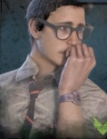

パーク構成がわからない人はパーク構成へのリンクを参考にしてね。じゃあいくよ🦦
① 開始直後の立ち回り
まず走って発電機を探す。全力疾走（スプバ）を入れててもまず走る。キラーが何かよくわからんところからよくわからんことしてきてもまず走る。これ「逃げラッコ式🦦」では鉄則。
このとき絆で近くの味方の動きを確認して、できるだけ自分は個別行動になるのが望ましいけど、味方がついてきたり、同じ発電機を回そうとしてくるなら気にせず一緒に発電機を回そう。それはそれで速いからね。とにかく目についた発電機に張りつこう🦦
【注意点】明らかにマップの中央だと思われる場所には走らない！中央がどこかわからないってんならしょうがないけど、自分がマップの端っこにいるってわかったら端っこ沿いに走るのが良いよ！
なんかでっかい建築物があるなら真ん中らへんかもって思っても良いよ。俺もそんな感覚でやってるからね🦦
（違う場合ももちろんあるよ。でもそこまで頑張って覚えなくて良いよ。）
② 発電機を回してる途中の立ち回り
絆のオーラで見える範囲の人の行動を見てあの人何してるかなーってぼけーっと考えてみよう。発電機を回してたり、トーテムを撫で撫でしてたりしてたりしたら左のアイコンで答え合わせできるぞ🦦
キラーの心音が聞こえてきたら、まだ発電機から手は離さずに、周囲の様子と味方のアイコンをチラチラ見よう。味方のアイコンがぴこぴこ動いていたらその人がチェイス中だから気にせず発電を続行だ。
キラーがこっちに来るのが確認できたら速やかに逃げる！全力疾走（スプバ）があったら爆速だ。
③ キラーから逃げる時の立ち回り
「逃げラッコ式」では長時間チェイスはしようとしないよ。とにかくまっすぐ逃げるんだ。無傷のときは１回だけキラーに背中を押してもらえるよ。
※キラーからもらう１発目の攻撃は攻撃と思わない。攻撃をくらったら「背中押してくれてありがとう！」って言ってみよう。それが「逃げラッコ式」だよ🦦
自分がチェイスしてから吊られるまでの間、何が起きたか振り返ってみよう。残りの発電機がいつの間にか減っている、吊られていた味方が復帰している、負傷してた味方が回復している、味方が遠くで全員発電作業に取り掛かっている…
それが自分の成果だよ。あとは気長に救助が来るのを待とう🦦
④ 味方に救助してもらった後の立ち回り
救助されたら回復のことは一旦考えない。10秒間逃げる痕跡が消えるんだ。この10秒でとりあえず安全そうな場所に逃げ込もう。ちょっとした隠密ってやつだよ。
動かずにじっと絆で味方の様子を見てみよう。安全そうに発電機を回している味方がいたらその人のところに行ってあげるのが良いと思うよ、回復してもらえるかもしれないしね🦦
警戒を入れてる人はキラーが発電機を破壊したりした時に通知が来てオーラが見えるよ。そこの発電機を引き継いであげることを頭の片隅に入れておこう。誰かのチェイスが始まったらそこの発電機を回しに行くチャンスだよ🦦
⑤ 味方が吊られてしまった時の立ち回り
ここはとっても大事！パターン化して、単純に考えよう🦦
【自分が救助に行くパターン】
- 味方2人が別々の発電機を回している時
- 味方1人が発電機、味方1人がチェイスしている時
- 味方2人が2吊りでリーチの時（けっこうピンチ）
全部左のアイコンを見ればわかるよ
救助したあとは味方が走ったら味方とは反対方向に走る。味方がその場でしゃがんだら回復してあげる（キラーが近づいてきたら見捨てて逃げようね🦦）
【自分が救助に行かないパターン】
上のどれにも当てはまらない時。その時は全部他の人に任せよう。救助に時間がかかって2吊に入ってしまった時は「薄情な味方だなぁ」って他人事に思っとくよ、これが「逃げラッコ式」🦦
⑥ 発電機が5台上がった時の立ち回り
2箇所あるゲートの位置を確認して、近い方にまっすぐ最短距離を走っていくよ。ただしそっちのゲートにキラーがいる時は反対のゲートに向かおう。
レバーを入れたら上げ切っちゃおう。ここで寸止めしたりとか、敢えて半分で止めるとか色気付いたことはしない。逃げ道を確保するのが最優先事項だよ！
味方が先にレバーを入れてる時は、近くの岩陰とかに隠れてじっと待っておこう。キラーが来て味方が離れてしまった時は自分がすかさず引き継いで、ゲートを開けてしまおう。
さあ脱出は目前だ🦦
⑦ ゲート解放後の立ち回り
逃げれる状況になったらもう逃げちゃって良いよ。ここまで行けば自分の功績、逃げたって良いんだよ。実際に命がかかってたら…まあ逃げるよね🦦
ここからはオマケだけど、逃げ遅れた可哀想の味方がいた時は、自分が代わりに死ぬ覚悟があるなら助けてあげても良いよ。無傷なら肉壁になってあげるとか、ゲート内に負傷した味方がいるなら回復してあげるとか、色々してあげたらいいよ。
これは別に「逃げラッコ式」とは違うから、好きに判断してやったら良いよ。
でもね、キラーのパークには「誰も死から逃れられない（ノーワン）」や「血の番人」っていう恐ろしいパークがあるんだ。今は知らなくても別に良いけど、とりあえずヤバいからゲートが開いたらすぐに逃げることをオススメするよ🦦
⑧ 無事に脱出したら
味方やキラーの使っていたパークを見てみよう。
「へえー、こんなパークがあるんだ」
「なんかこのパーク使ってるキラー多いなあ」
「あ、あの時のあれはこれかあ」
とか、漠然とそんなこと考えながら感傷に浸ろう。一番ホッとできる時間だからね。
脱出おめでとう🦦